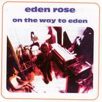

Home Artist links Label link

Eden Rose - On The Way To Eden
| Artist: | Eden Rose |
| Title: | On The Way To Eden |
| Label: | Musea FGBG 4404.AR |
| Length(s): | 37 minutes |
| Year(s) of release: | 1970/2003 |
| Month of review: | [01/2004] |
Line up
Jean-Pierre Alarcen - guitars
Henri Garewlla - keyboards
Michel Julien - drums
Christian Clairefond - bass
Tracks
| 1) | On The Way To Eden | 5.09
|
| 2) | Faster And Faster | 3.05
|
| 3) | Sad Dream | 4.09
|
| 4) | Obsession | 4.24
|
| 5) | Feeling In The Living | 4.19
|
| 6) | Travelling | 3.26
|
| 7) | Walking In The Sea | 5.29
|
| 8) | Reinyet Number | 4.34
|
| 9) | Under The Sun (bonus) | 2.30
|
Summary
Alarcen is a guitarist with some nice solo records in his name.
He also played in a band at some point called Eden Rose who
released their debut in 1970.
The music
If you like woolly organs, then the opening track is something for you.
The guitar playing is quite similar to that of Focus, a band which
existed at more or less the same time. The organ playing is a little
bit on the mellow side, being more in the line of the sixties.
Faster And Faster is indeed quite a bit pacier. The keyboardist tends
to concentrate on an organ sound, while the guitar playing is sharp,
biting and rather psychedelic. There is a strong blues undercurrent.
If I would have to name a band which operates in the same genre nowadays
then it would be Trespass. Groovy organ dominated rock, sounding
somewhat woolly and dated. Likely enough Steve Winwood is also an
influence here (think Spencer Davis Group here).
Sad Dream on the other hand opens as a variation on Frere Jacques,
however then it turns for the mellow with a strong Whiter Shade Of Pale
content. And it is also a bit slow. It gets to be more proggy on
Obsession, where the pace sets in again and the playing is more
percussive, more urgent. Mid tempo organ dominated material can be
found on Feeling In The Living. The drumming is very straightforward
throughout (and hey, a stereo effect), and this is the case for
all the tracks so far.
The bass opens on Travelling, after which it turns to what we
have heard before. Walking In The Sea contains echoes of
Je T'Aime (Moi Non Plus) and has a lazy feel. Again, the music is
no more than good time music, and this is not what I want in music.
The guitar does manage to save the day somewhat with a psychedelic
solo at the end.
With Reinyet Number we have arrived at the final song of the album
sec. Here the mood is strongly reminiscent of Santana (Jingoooo).
Ehm.
The final track is a bonus track a melodic and mellow thingy
reminiscent of the early days of Aphrodite's Child.
Conclusion
Seems Musea is still uncovering unreleased records from way back. I am
not sure whether anyone is still waiting for this, except for maybe
nostalgic reasons. I am as nostalgic as the next person, but in this
particular case I was born a year before it was released. Having that said,
the music sounds too dated for my tastes: lots of organ, lots of meandering
solo's that people at time maybe hadn't heard enough, but I know too many
albums in the same style. The guitar playing is surprisingly sharp, but the
remainder of the album is for me too uncommital. In my ears
a superfluous rerelease.
© Jurriaan Hage